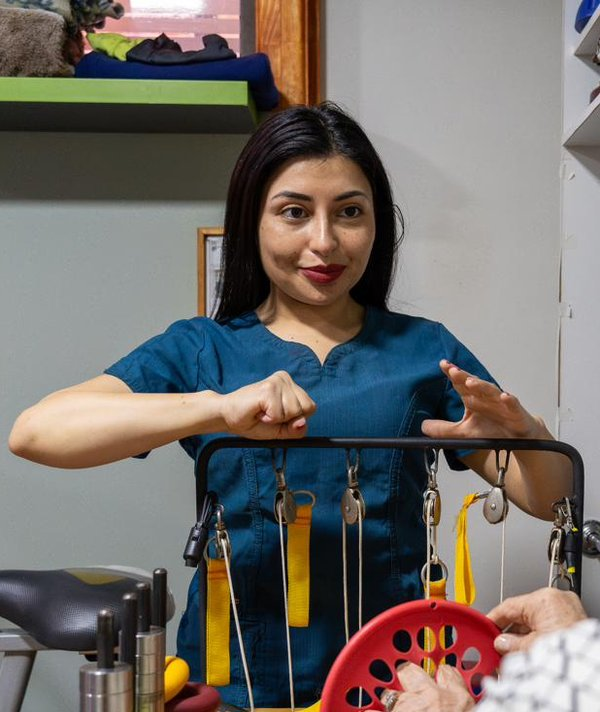

Javiera López Urrutia
Kinesióloga y Cosmetóloga · Directora de Osteomed
Fundadora del centro. Kinesióloga de la Universidad de Playa Ancha, con pasantía clínica en la Universidad de Matanzas, Cuba. Hoy lidera el programa de telerehabilitación, guiando sesiones en vivo para que la distancia no detenga tu recuperación.